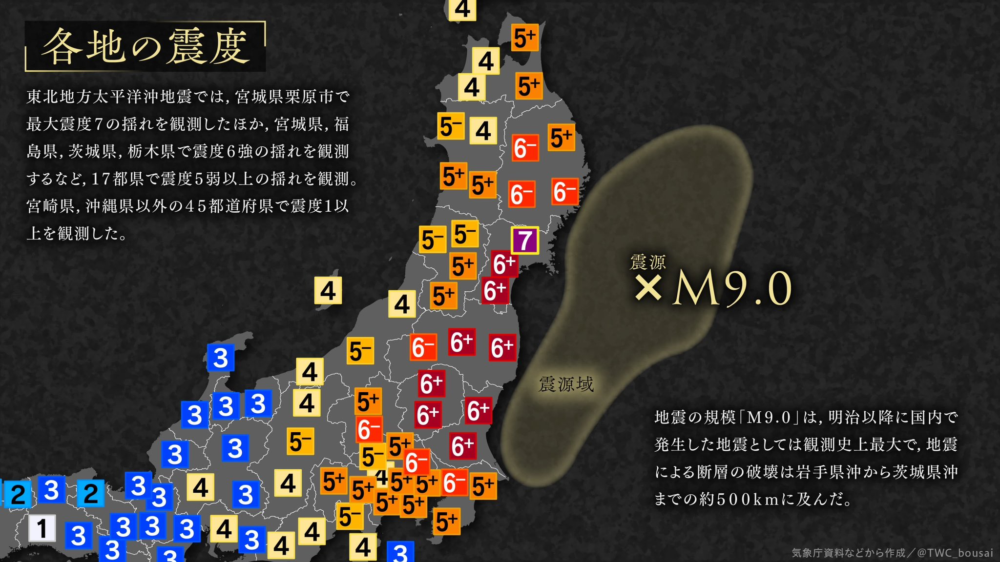

보드로 돌아가기
2023년 3월 11일 20시 00분 현재
2011년 3월 11일 14시 46분 지진

2011년 3월 11일 14시 46분
산리쿠 해역
깊이 : 약 23km
최대진도 7
(미야기 현 북부)
규모 9.0
장주기지진동 계급 4
(XXXXX, XXXXX, XXXXX)
대해일경보・해일경보・해일주의보 발표중
최근 뉴스
일 | [호외] 미야기 진도 7
일 | 강한 흔들림, 대낮을 흔들다
한 | [속보] 일본에서 규모 9.0 지진 발생
일 | 미야기 현, 후쿠시마 현, 이와테 현 대해일경보